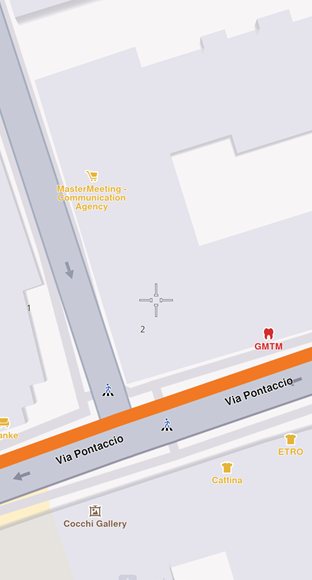
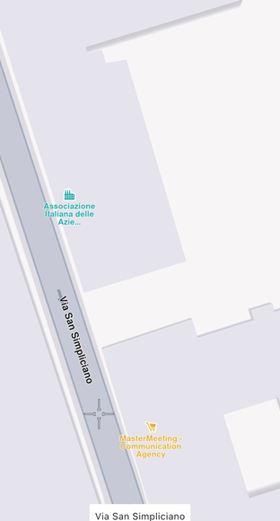

Interact With The Map¶
The Navigation SDK supports common touch gestures like pinch, double-tap, and pan. Use gesture listeners to detect user interactions and respond with custom actions like selecting landmarks or displaying information.
Understanding gestures¶
The map view natively supports common gestures. The table below outlines the available gestures and their default behaviors:
| Gesture | Description |
|---|---|
| Tap | Tap the screen with one finger. This gesture does not have a predefined map action. |
| Double Tap | To zoom the map in by a fixed amount, tap the screen twice with one finger. |
| Long Press | Press and hold one finger to the screen. This gesture does not have a predefined map action. |
| Pan | To move the map, press and hold one finger to the screen, and move it in any direction. The map will keep moving with a little momentum after the finger was lifted. |
| 2 Finger Pan / Shove | To tilt the map, press and hold two fingers to the screen, and move them vertically. No behavior is predefined for other directions. |
| 2 Finger Tap | To align map towards north, tap the screen with two fingers. |
| Pinch | To zoom in or out continuously, press and hold two fingers to the screen, and increase or decrease the distance between them. To rotate the map continuously, press and hold two fingers to the screen, and change the angle between them either by rotating them both or by moving one of them. |
Gesture listeners¶
The GemMapController provides listeners to detect user gestures. Add custom behaviors like selecting landmarks or displaying information after a gesture is detected.
Basic gestures:
- Tap -
registerOnTouch - Double Tap -
registerOnDoubleTouch - Two Taps -
registerOnTwoTouches - Long Press -
registerOnLongPress - Pan -
registerOnMove(provides start and end points) - Shove -
registerOnShove(provides angle and gesture points) - Rotate -
registerOnMapAngleUpdate - Fling -
registerOnSwipe - Pinch -
registerOnPinch
Composite gestures:
- Tap followed by pan -
registerOnTouchMove - Pinch followed by swipe -
registerOnPinchSwipe - Tap followed by pinch -
registerOnTouchPinch - Two double touches -
registerOnTwoDoubleTouches
🚨 Alert: Only one listener can be active at a time for a specific gesture. If multiple listeners are registered, only the most recently set listener will be invoked.
Use registerOnMapViewMoveStateChanged to retrieve the RectangleGeographicArea currently visible whenever the map starts or stops moving:
mapController.registerOnMapViewMoveStateChanged((hasStarted, rect) {
if (hasStarted) {
print('Gesture started at: ${rect.topLeft.toString()} , ${rect.bottomRight.toString()}');
} else {
print('Gesture ended at: ${rect.topLeft.toString()} , ${rect.bottomRight.toString()}');
}
});🚨 Alert: This callback is triggered when the camera is moved programmatically using methods like
centerOnRoutes,followPosition, orcenterOnArea, but not when the user performs a panning gesture. For detecting user behavior, useregisterOnMove.📝 Note: The callback function is defined as void
Function(bool isCameraMoving, RectangleGeographicArea area), whereisCameraMovingis true when the camera is moving and false when stationary.
Enable and Disable Gestures¶
Disable or enable touch gestures using the enableTouchGestures method:
mapController.preferences.enableTouchGestures([TouchGestures.onTouch, TouchGestures.onMove], false);📝 Note: Set the
enabledparameter totrueorfalseto enable or disable the specified gestures from theTouchGesturesenum. By default, all gestures are enabled.
The TouchGestures enum supports the following gesture types:
- Basic Touch - onTouch, onLongDown, onDoubleTouch, onTwoPointersTouch, onTwoPointersDoubleTouch
- Movement - onMove, onTouchMove, onSwipe
- Pinch and Rotation - onPinchSwipe, onPinch, onRotate, onShove
- Combined Gestures - onTouchPinch, onTouchRotate, onTouchShove, onRotatingSwipe
- Other - internalProcessing
Check if a gesture is enabled using the isTouchGestureEnabled method:
bool isTouchEnabled = mapController.preferences.isTouchGestureEnabled(TouchGestures.onTouch);Register Gesture Listeners¶
Register gesture listeners using the GemMapController. Once registered, the listener receives all related events via the dedicated callback:
// previous code
// attach the _onMapCreated callback to GemMap
GemMap(
onMapCreated: _onMapCreated,
appAuthorization: projectApiToken,
),
void _onMapCreated(GemMapController mapController) async {
mapController = mapController;
controller.registerOnMapAngleUpdate((angle) {
print("Gesture: onMapAngleUpdate $angle");
});
controller.registerOnTouch((point) {
print("Gesture: onTouch $point");
});
controller.registerOnMove((point1, point2) {
print(
'Gesture: onMove from (${point1.x} ${point1.y}) to (${point2.x} ${point2.y})');
});
controller.registerOnLongPress((point) {
print('Gesture: onLongPress $point');
});
controller.registerOnMapViewMoveStateChanged((hasStarted, rect) {
if (hasStarted) {
print(
'Gesture started at: ${rect.topLeft.toString()} , ${rect.bottomRight.toString()}');
} else {
print(
'Gesture ended at: ${rect.topLeft.toString()} , ${rect.bottomRight.toString()}');
}
});
}🚨 Alert: Executing resource-intensive tasks within map-related callbacks can degrade performance.
Register Map Render Listeners¶
Monitor viewport dimension changes using registerOnViewportResized. This occurs when the user resizes the application window or changes device orientation. The callback receives a Rectangle<int> object representing the new viewport size:
mapController.registerOnViewportResized((Rectangle<int> rect) {
print("Viewport resized to: ${rect.width}x${rect.height}");
});- Adjust overlays or UI elements to fit the new viewport size
- Trigger animations or updates based on map dimensions
The registerOnViewRendered method is triggered after the map completes a rendering cycle. This listener provides a MapViewRenderInfo object with rendering details:
mapController.registerOnViewRendered((MapViewRenderInfo renderInfo) {
print("View rendered: ${renderInfo.status}");
});Select Map Elements¶
After detecting a gesture like a tap, perform specific actions such as selecting landmarks or routes. Selection uses a map cursor, which is invisible by default. Make the cursor visible using MapViewPreferences:
void _onMapCreated(GemMapController mapController) {
// Save mapController for further usage.
mapController = mapController;
// Enable cursor (default is true)
mapController.preferences.enableCursor = true;
// Enable cursor to render on screen
mapController.preferences.enableCursorRender = true;
}
Displaying a cursorSelect landmarks¶
Get selected landmarks using the following code (place in the onMapCreated callback):
mapController.registerOnTouch((pos) async {
// Set the cursor position.
await mapController.setCursorScreenPosition(pos);
// Get the landmarks at the cursor position.
final landmarks = mapController.cursorSelectionLandmarks();
for(final landmark in landmarks) {
// handle landmark
}
});📝 Note: At higher zoom levels, landmarks from
cursorSelectionLandmarksmay lack some details for optimization. UseSearchService.searchLandmarkDetailsto retrieve full landmark details.
Unregister the callback:
mapController.registerOnTouch(null);📝 Note: The SDK only detects landmarks positioned directly under the cursor. Call
cursorSelectionLandmarksafter updating the cursor's position.🚨 Alert: The cursor screen position determines the default screen position for centering (unless other values are specified). Modifying the screen position might change centering behavior unexpectedly. Reset the cursor position using
resetMapSelection(needs to be awaited).
Select streets¶
Return selected streets under the cursor using the following code in the _onMapCreated callback:
// Register touch callback to set cursor to tapped position
mapController.registerOnTouch((point) async {
await mapController.setCursorScreenPosition(point);
final streets = mapController.cursorSelectionStreets();
String currentStreetName = streets.isEmpty ? "Unnamed street" : streets.first.name;
});🚨 Alert: Setting the cursor screen position is asynchronous and must be awaited. Otherwise, the result list may be empty.
Display the street name on screen:

Displaying a cursor selected street name📝 Note: The cursor visibility has no impact on selection logic.
Get the current cursor screen position using the cursorScreenPosition getter. Reset the cursor position to the center using resetMapSelection (needs to be awaited).
Selection methods¶
The SDK provides multiple methods to select different element types on the map:
| Entity | Select method | Result type | Observations |
|---|---|---|---|
| Landmark | cursorSelectionLandmarks |
List<Landmark> |
|
| Marker | cursorSelectionMarkers |
List<MarkerMatch> |
Returns MarkerMatch, not a Marker |
| OverlayItem | cursorSelectionOverlayItems |
List<OverlayItem> |
|
| Street | cursorSelectionStreets |
List<Landmark> |
Streets are handled as landmarks |
| Route | cursorSelectionRoutes |
List<Route> |
|
| Path | cursorSelectionPath |
Path? |
Null is returned if no path is found |
| MapSceneObject | cursorSelectionMapSceneObject |
MapSceneObject? |
Null is returned if no map scene object is found |
| TrafficEvent | cursorSelectionTrafficEvents |
List<TrafficEvent> |
When selecting markers, a list of MarkerMatch elements is returned. Each match contains information about the marker collection, the marker's index in the collection, the matched part index, and the matched point index in the part.
Register selection callbacks¶
Register callbacks that are triggered when the cursor is placed over elements:
registerOnCursorSelectionUpdatedLandmarks- LandmarksregisterOnCursorSelectionUpdatedMarkers- MarkersregisterOnCursorSelectionUpdatedOverlayItems- Overlay itemsregisterOnCursorSelectionUpdatedRoutes- RoutesregisterOnCursorSelectionUpdatedPath- PathsregisterOnCursorSelectionUpdatedTrafficEvents- Traffic eventsregisterOnCursorSelectionUpdatedMapSceneObject- Map scene objects
These callbacks are triggered when the selection changes, when new elements are selected, when the selection switches to different elements, or when the selection is cleared (callback invoked with null or an empty list).
Unregister a callback by calling the corresponding method with null as the argument.
Capture the Map View As An Image¶
Save the map as an image to generate previews that are too expensive to redraw in real time. The captureImage method returns a Future<Uint8List?>representing the image as a JPEG:
final Uint8List? image = await mapController.captureImage();
if (image == null){
print("Could not capture image");
}🚨 Alert: Platform differences: - iOS - The captured image excludes on-screen elements like the cursor - Android - The captured image includes all on-screen elements, including the cursor
🚨 Alert: Capturing the map view may not work correctly when map rendering is disabled.
📝 Note: Ensure map animations and loading have completed before capturing. Wait for
registerOnViewRenderedto be triggered withdataTransitionStatusset toViewDataTransitionStatus.complete. Implement a timeout, asregisterOnViewRenderedis only triggered when the map is rendering and will not be called if everything is already loaded.